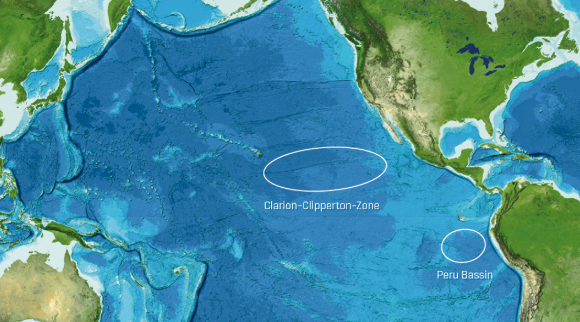
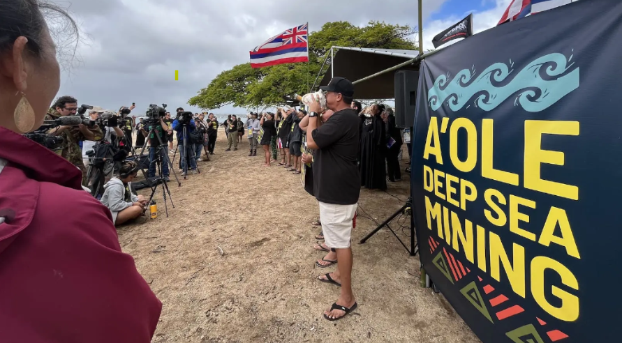
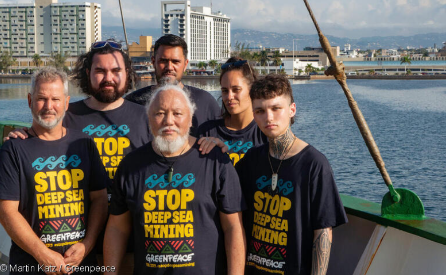

New Regulation May Accelerate Deep Sea Mining - What This Means for Coastal Indigenous Communities
By Mia Schmitt
What is Deep Sea Mining?
The deep sea floor is covered with polymetallic nodules. These potato-shaped rocks contain precious metals like lithium, cobalt and nickel. They are harvested by subsea collector rovers that go two miles underneath the water. The rovers vacuum up the nodules and suck them up a tube to the surface, where they are collected on the boat.
Pros of DSM
Without deep sea mining, the road to environmental sustainability is extremely challenging. To make solar panels, electric vehicle batteries, and cell phones, finite precious metals like cobalt, nickel, and copper are crucial. These metals can be found in nodules. Total metal quantity in these nodules is estimated to be almost 20 times the quantity of metal on Earth’s land.
Clean energy technologies require more materials than the pre-existing fossil-fuel based technologies. A larger demand for finite resources is inevitable with investments in sustainable energy. The international energy agency estimates that the world will need double the metals currently used to meet targets necessary for a global transition to sustainable energy, and four times the metals used to reach net-zero greenhouse gas emissions. Finding these metals has only gotten more difficult, which has increased mining costs and forced companies to mine in more dangerous areas. To continue land mining means sending workers into more dangerous areas and creating mines in undesirable places that can harm nearby communities.
Deep sea mining requires little manual labor, which reduces the human risk when extracting resources. The nodules can be harvested efficiently without any damage to land. A country capitalizing on these nodules would create an economic boom that would fuel the future’s sustainability.
Oliver Gunasekara, CEO of a DSM mining machinery company, believes that his company’s Autonomous Underwater Vehicles can ethically collect these nodules while maintaining marine biodiversity. He believes that supportive regulation will make DSM “10x faster, 10x cheaper, and 10x lower impact than the alternatives, without relying on foreign adversaries” within the next three years. He estimates the new industry could generate $300 billion in domestic economic output in the next ten years and create over 100,000 jobs. The metals are also necessary for America’s defense system, like for creating fighter jets. Failing to invest in DSM soon will allow other countries, such as China, to lead in seabed minerals and lose America’s potential competitive advantage.
Cons of DSM
While the land may be preserved with DSM, the ocean—which makes up 71% of Earth—will pay the price. The deep sea is one of the few places left that is relatively untouched by humans. Deep sea nodules only grow 2-15 millimeters per million years. Extracting them will alter the deep sea ecosystem permanently.
The rover that extracts the nodules will also significantly harm marine life in both the deep sea and surface water. The deep sea is not bare, as previously believed. Octopus nurseries, coral, and sponges exist on or around the nodules. Extracting the nodules will destroy their environment—that is, if the animals even survive through the extraction.
When the rover brings the nodules to the surface, it also brings a lot of sediment. The dumped sediment will contain dangerous metals and irritate marine life. More than that, the vehicles create noise and light pollutions that can impact predator-prey behavior. According to oceanographer Beth Orcutt, “Nodules are essential ecosystem architects. If you remove the nodules, you will remove the architecture supporting the entire oceanic ecosystem.”
The Impacts on Coastal Indigenous Communities
Check out the dashboard to learn about the violations found in each food-handling sector!
For more information, please email us at miaschmit2027@u.northwestern.edu
The Impacts on Coastal Indigenous Communities
57% of fishing stocks are already maxed out to keep up with demand, and 35% are overfished. Any new stressors can be detrimental to the future of these fisheries. The heavy metals brought to the surface water can also infect the fish caught, which can contaminate remaining food sources.
Indigenous communities around the globe rely on fishing for their community. For example, tuna-dependant Pacific small island states depend on tuna for 84% of their GDP. Indigenous People in the Pacific Islands are intimately connected to the ocean and its marine life, and have historically served as custodians. Along with food and supplies, the ocean serves as their cultural heritage—a factor rarely considered by governments.
Tourism is also affected by DSM, as the environmental degradation sullies the gorgeous coast.
Though little time has passed since the executive order, in Hawaii, a company is seeking U.S approval to begin DSM in an area between Mexico and Hawaii (The Clarion-Clipperton Zone) that holds trillions of deposits containing precious metals. In an interview with former state lawmaker from Lānaʻi turned environmental advocate Solomon Pili Kahoʻohalahala, he says, “What is clear to me is that the United States does not represent the Indigenous people and its knowledge and its interests, and we need to be the ones to be our own advocates, our own support.”
Environmental harm is guaranteed with DSM—though the extent of harm is still unknown. Legislation made by governments are choosing to risk the welfare of Indigenous communities without giving them a voice in the matter.
Image shows the Clarion-Clipperton Zone
The Effects of New Legislation
Before the executive order, the United States had little voice in the DSM debate. The United Nations had previously established the International Seabed Authority (ISA), which is in charge of determining the regulations to govern the potential seabed mining industry. It has spent years trying to create a rulebook, but currently the decisions are still up in the air as they weigh marine ecosystem health against harvesting necessary resources. The U.S. is not a part of the ISA, though previous administrations have respected their rules.
The executive order puts the U.S. in the middle of the DSM debate by making it easier for Americans to mine the seafloor. This puts pressure on the ISA to make decisions, as other countries will want to keep up with the U.S. Since the U.S. is not part of the ISA, it does not have to follow the regulations that the ISA will put in place.
So far, one company seeks approval to mine in the zone between Hawai’i and Mexico, but other companies will certainly follow.
However, in order for the DSM industry to grow, Congress must support President Trump by improving the permit system, integrating nodules into the National Defense Stockpile, funding innovation, and creating a defined timeline for innovation. Environmental scientists and Indigenous communities have spoken against harvesting one of the most delicate ecosystems in the world, and it is unclear if Congress will support President Trump.
Indigenous Communities Fight Back
 Indigenous communities are fighting back against the executive order. The United Nations Declaration on the Rights of Indigenous Peoples (UNDRIP) states that Indigenous Peoples have the right to free, prior, and informed consent before any project affecting their land is approved. The U.S. has not ratified UNDRIP, but it is still a guiding principle for many Indigenous communities.
As of 2023, over 1,000 signatures from over 34 countries and 56 Indigenous groups called the ISA to completely ban DSM. Communities demand recognized Indigenous sovereignty of the oceans and a seat at the table for DSM negotiations.
The Future of DSM
Companies are putting pressure on the ISA to finally make a decision on DSM regulations, though no decision has been made. However, the Agreement under the United Nations Convention on the Law of the Sea on the Conservation and Sustainable Use of Marine Biological Diversity of Areas beyond National Jurisdiction (BBNJ Agreement) made in 2023 by the Intergovernmental Conference on Marine Biodiversity of Areas Beyond National Jurisdiction convened with suggested protections over designated marine areas and environmental impact monitoring. Originally opened for signature in Sept. 2023, the Agreement will stay open until Sept. 2025.
Whether or not Congress supports President Trump’s executive order to invest in DSM remains unclear.
Sources
- White House policy: https://www.whitehouse.gov/presidential-actions/2025/04/unleashing-americas-offshore-critical-minerals-and-resources/
- United Nations Declaration on the rights of indigenous peoples: https://www.un.org/development/desa/indigenouspeoples/wp-content/uploads/sites/19/2018/11/UNDRIP_E_web.pdf
- Trump’s executive order: https://www.noaa.gov/news-release/next-gold-rush-president-trump-unlocks-access-to-critical-deep-seabed-minerals
- Land vs water total nodules: https://deepseamining.ac/opportunity_size#gsc.tab=0
- Pro-DSM mining owner: https://www.congress.gov/119/meeting/house/118089/witnesses/HHRG-119-II15-Wstate-GunasekaraO-20250429.pdf
- DSM techniques: https://www.reuters.com/graphics/MINING-DEEPSEA/CLIMATE/zjpqezqzlpx/
- DSM negatives: https://www.nature.com/articles/s44183-023-00009-7
- Hawaii Indigenous People: https://www.hawaiipublicradio.org/the-conversation/2025-04-28/environmental-advocate-focused-on-indigenous-values-reacts-to-deep-sea-mining-order
- DSM alternatives: https://www.worldbank.org/en/programs/climate-smart-mining/overview
- Photos: https://deepseamining.ac/deep_sea_mining_equipment#gsc.tab=0
- Executive Order: https://www.hawaiipublicradio.org/national-international/2025-04-24/the-u-s-takes-a-step-toward-allowing-mining-on-the-ocean-floor-a-fragile-ecosystem
- Fighting Back: https://www.greenpeace.org/usa/indigenous-peoples-from-34-nations-call-for-total-ban-on-deep-sea-mining/